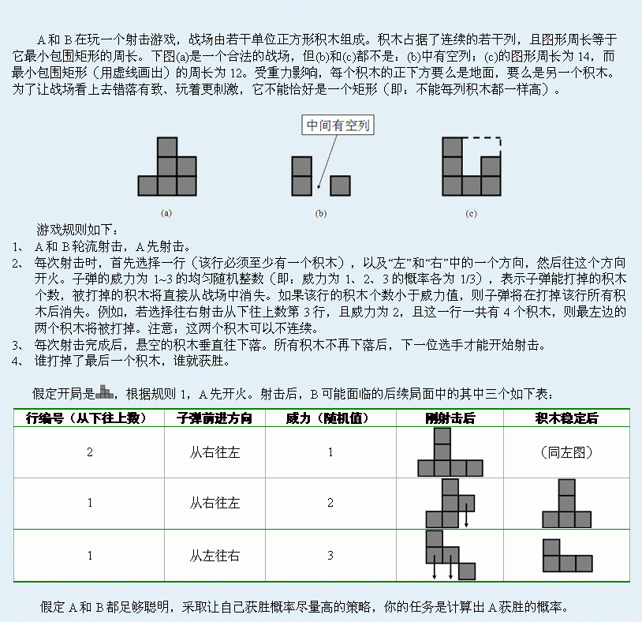

输入文件最多包含25组测试数据，每个数据仅包含两行，第一行是整数n（1<=n<=6），即积木的列数。第二行包含n个正整数h1, h2,..., hn(1<=hi<=6)，表示从左往右数第i列的高度。积木的排列方式保证符合题目描述（即：图形周长等于它最小包围矩形的周长，且各列的高度不全相同）。n=0表示输入结束，你的程序不应当处理这一行。
对于每组数据，输出仅一行，即A获胜的概率，四舍五入保留六位小数。
3 2 1 1 0
0.555556
湖南省第六届大学生计算机程序设计竞赛